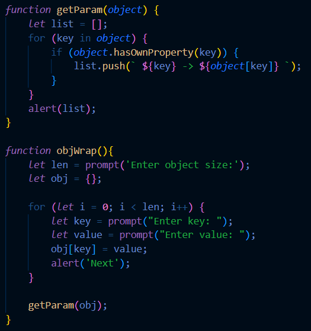
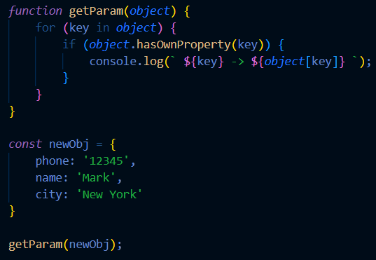
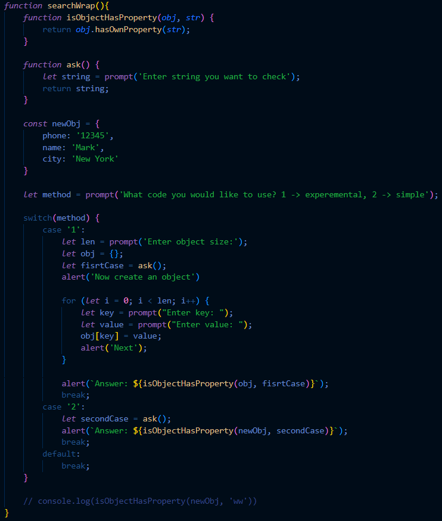
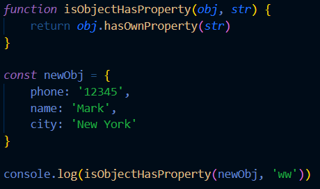
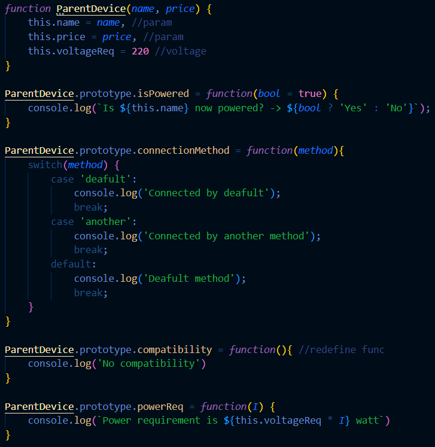
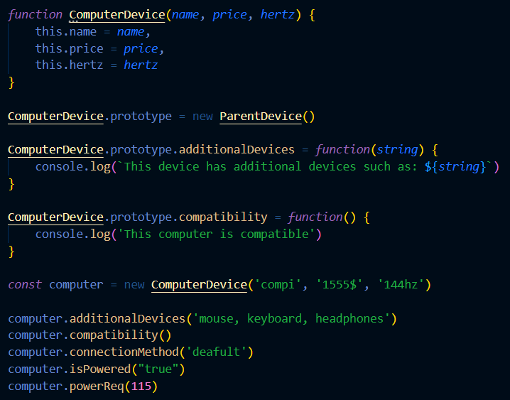
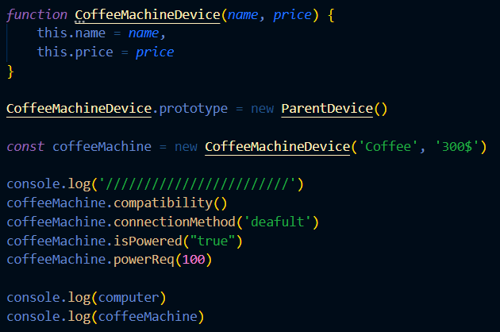

Object list
Task
Написать, функцию, которая принимает в качестве аргумента объект и выводит в консоль
все ключи и значения только собственных свойств. Данная функция не должна возвращать значение.
Warning! Simple one is located below only in code.
View experimental code
View simple code
Object search
Task
Написать функцию, которая принимает в качестве аргументов строку и объект,
а затем проверяет есть ли у переданного объекта свойство с данным именем.
Функция должна возвращать true или false.
Warning! Now you can use simple code!
View experimental code
View simple code
Null object
Task
Написать функцию, которая принимает в качестве аргументов строку и объект,
а затем проверяет есть ли у переданного объекта свойство с данным именем.
Функция должна возвращать true или false.
View experimental code

Parent object
Task
Определить родительскую функцию с методами, которые включают/выключают прибор из розетки.
Создать делегирующую связь [[Prototype]] для двух конкретных приборов.
У каждого из приборов должны быть собственные свойства и, желательно, методы, отличные от родительских методов.
Создать экземпляры каждого прибора.
Вывести в консоль и посмотреть результаты работы
Part one
Part two
Part three
Classes
Task
Переписать консольное приложение из предыдущего юнита на классы.
Имена классов, свойств и методов должны быть информативными;
Соблюдать best practices;
Использовать синтаксис ES6.